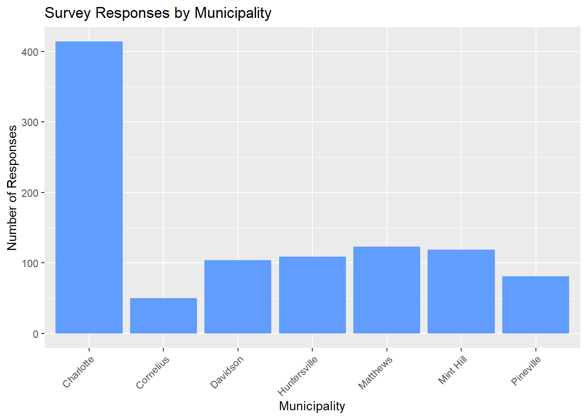
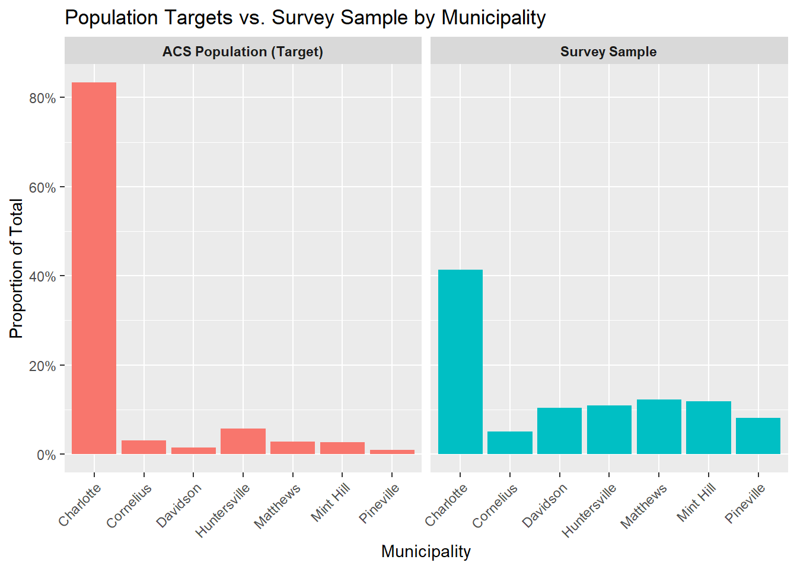

# 0.0 Install Packages and Load Libraries
# install.packages("tidyverse")
# install.packages("tidycensus")
# install.packages("viridisLite")
# install.packages("viridis")
# install.packages("xlsx")
# install.packages("sf")
# install.packages("sampling")
# install.packages("survey")
# install.packages("plotly")
library(tidyverse) # data wrangling
library(tidycensus)
library(viridisLite)
library(viridis)
library(sf)
library(sampling)
library(plotly)
library(readxl) # reading in excel files
library(janitor) # clean up
library(magrittr)
library(stringr)
library(scales) # to use the percent() for the summary file
library(gtsummary) # statistical tests and table
library(gt) # Editing GT tables
library(survey)
options(tigris_use_cache = TRUE)Survey Weighting for Community Health Assessments (CHA)
1 Introduction
A community health assessment (CHA) is a systematic process that uses quantitative and qualitative data to describe and understand the health status, needs, and assets of a defined community, as outlined by NACCHO. Survey weighting is a statistical technique that can be incorporated into CHA analyses to ensure that survey results more closely reflect known population characteristics.
In this tutorial, we demonstrate how to apply survey weighting using a synthetic CHA dataset using Mecklenburg County as a case study. Although this example focuses on weighting by municipality (i.e., Mecklenburg County geographic areas), the same methods can be applied to other population characteristics such as age, race/ethnicity, or income.
2 Sampling Design Overview
Mecklenburg County conducted data collection for its Community Health Assessment using a combined probability and non-probability sampling design.
2.1 Probability sample
Respondents in the probability sample were selected proportionally based on the population size of Mecklenburg County municipalities (geographic areas). These individuals were invited to participate through mailed postcards. For this example, 600 postcards were allocated across municipalities. Target response counts were established according to each municipality’s share of the total county population to support geographically representative estimates.
See Table 1 below for the sample size counts by municipality for the probability sample. These counts represent the number of respondents that were invited to participate in the survey through mailed postcards for each municipality.
| municipality | sample_size |
|---|---|
| Charlotte | 500 |
| Cornelius | 18 |
| Huntersville | 34 |
| Pineville | 6 |
| Davidson | 9 |
| Mint Hill | 16 |
| Matthews | 17 |
2.2 Non-probability sample
Surveys were distributed at community events and through word of mouth. This approach increased reach, especially among populations that are often underrepresented in traditional sampling frames.
Non-probability responses were collected without predefined quotas and therefore do not necessarily align with population proportions.
3 Looking at the CHA Survey Data
Now, let’s load our the libaries that we need.
Below is a brief look at the synthetic dataset we will be working with for this tutorial. The synthetic dataset contains both probability and nonprobability reponses. For this tutorial, we assume that data cleaning has already been completed.
3.1 Exploration of the Dataset
Variables in the synthetic dataset include:
municipality: indicates the municipality of residence for each respondent.age_grp: indicates the age group of the respondent.response_type: indicates whether the response was from the probability sample (Postcard) or non-probability sample (Web).eligibility: indicates whether the respondent is eligible for the survey based on residency and age criteria. All respondents in the dataset are eligible for analysis.age: indicates the age of the respondent.gender: indicates the gender of the respondent.race: indicates the race of the respondent.hisp_lat: flags whether the respondent is of Hispanic or Latino origin.accessCare: indicates whether the respondent reported having a time in the past 12 months when they needed medical care but could not get it.
# Example Dataset: This dataset is a synthetic dataset modeled after the data collection strategy used in Mecklenburg County's CHA. It includes a mix of probability and non-probability responses, with a variable indicating the municipality of residence for each respondent. This dataset is similar to a csv export from Qualtrics.
# Read data
analysis_dataset <- read_csv("synthetic_qualtrics_dataset.csv") %>%
mutate(
municipality = str_to_title(municipality),
response_type = factor(response_type)
)
## Basic structure
# Dataset dimensions
dim(analysis_dataset)[1] 1000 10# Variable names and types
glimpse(analysis_dataset)Rows: 1,000
Columns: 10
$ response_id <dbl> 1, 2, 3, 4, 5, 6, 7, 8, 9, 10, 11, 12, 13, 14, 15, 16, 1…
$ municipality <chr> "Charlotte", "Huntersville", "Matthews", "Davidson", "Co…
$ age_grp <chr> "18-24 years", "45-64 years", "65-84 years", "25-44 year…
$ response_type <fct> Web, Postcard, Web, Postcard, Postcard, Web, Web, Postca…
$ eligibility <chr> "Yes", "Yes", "Yes", "Yes", "Yes", "Yes", "Yes", "Yes", …
$ age <dbl> 24, 52, 72, 31, 27, 33, 71, 87, 61, 62, 73, 74, 38, 85, …
$ gender <chr> "woman", "woman", "woman", "woman", "man", "man", "man",…
$ race <chr> "White", "Asian", "Black", "Other", "White", "White", "W…
$ hisp_lat <dbl> 0, 1, 0, 0, 0, 0, 0, 1, 0, 0, 0, 1, 1, 0, 0, 0, 0, 0, 0,…
$ accessCare <dbl> 1, 1, 0, 1, 1, 0, 1, 1, 1, 1, 1, 0, 0, 0, 0, 0, 0, 0, 0,…## Response counts
# Number of responses by mode (Web vs. Postcard)
table(analysis_dataset$response_type)
Postcard Web
248 752 ## Municipality distribution
# Number of responses by municipality
table(analysis_dataset$municipality)
Charlotte Cornelius Davidson Huntersville Matthews Mint Hill
414 50 104 109 123 119
Pineville
81 # Bar chart: responses by municipality
analysis_dataset %>%
ggplot(aes(x = municipality)) +
geom_bar(fill = "#619CFF") +
labs(
title = "Survey Responses by Municipality",
x = "Municipality",
y = "Number of Responses"
) +
theme(
axis.text.x = element_text(angle = 45, hjust = 1)
)
4 Pull Population Data
After survey data collection, you need benchmark population data to weight your survey data by.
How to determine what population data you need? * Who is your sample composed of? + Mecklenburg county residents * What population characteristics are you interested in? + Municipality, race, ethncity, gender, age etc. * What groups are under- or over-represented in your sample? What do you want to correct for? + Representative sample by municipality
Now let’s use American Community Survey (ACS) data to get the population totals we are interested in.
The ACS provides a variety of data tables. The most commonly used tables include: Base Tables/Detailed Tables (B), Data Profiles (DP), and Subject tables (S). Each table type contains different variables, so it’s important to investigate which variables are available in each table and determine which ones you need for your analysis.
# 1.0 Investigate ACS Variables ----
## 1.1 Base Tables/Detailed Tables (B) ----
acs_vars_b <- load_variables(2023, "acs5", cache = FALSE) # Update year
acs_vars_b_fil <- acs_vars_b %>% filter(geography == "tract")
## 1.2 Data Profiles (DP) ----
acs_vars_dp <- load_variables(2023, "acs5/profile", cache = FALSE) # Update year
## 1.3 Subject tables (S) ----
acs_vars_s <- load_variables(2023, "acs5/subject", cache = FALSE) # Update yearAfter you have determined which variables you want to pull, you can use the get_acs() function to pull the data. You can specify the geography, year, state, survey type, and variables you want to pull. The output can be in “wide” format (one row per geographic unit with columns for each variable) or “long” format (one row per variable per geographic unit).
In the code, you will note that we pull race data by age groups. This is because our survey only includes adults, so we will need to sum the relevant age groups together to create the adult population for each race category. The ACS variable names may change over time, so be sure to check the variable names for the year you are pulling data for. The variable names used in this code are based on the 2023 ACS data 5-year estimates.
# 2.0 Pull ACS Data from B/DP/S Tables -----------------------------------------
# ACS considers these municipalities (towns) as "Place"
acs_tbl <- get_acs(
geography = "place",
year = 2023, # Default is most recent year
state = "NC",
survey = "acs5", # Options are acs1, acs3 (for available yrs), acs5
geometry = F, # If TRUE, it gives feature geometry (for R)
# Plug in the variables you want to pull, example variables included below
variables = c(
total_pop = "S0101_C01_026",
#Gender
male_pop = "S0101_C03_026",
female_pop = "S0101_C05_026",
age_18_24 = "S0101_C01_023",
age_25_29 = "S0101_C01_007",
age_30_34 = "S0101_C01_008",
age_35_39 = "S0101_C01_009",
age_40_44 = "S0101_C01_010",
age_45_49 = "S0101_C01_011",
age_50_54 = "S0101_C01_012",
age_55_59 = "S0101_C01_013",
age_60_64 = "S0101_C01_014",
age_65_69 = "S0101_C01_015",
age_70_74 = "S0101_C01_016",
age_75_79 = "S0101_C01_017",
age_80_84 = "S0101_C01_018",
age_85_up = "S0101_C01_019",
# Race
wht_total = "B01001A_001",
wht_under_5_male = "B01001A_003",
wht_5_9_male = "B01001A_004",
wht_10_14_male = "B01001A_005",
wht_15_17_male = "B01001A_006",
wht_under_5_female = "B01001A_018",
wht_5_9_female = "B01001A_019",
wht_10_14_female = "B01001A_020",
wht_15_17_female = "B01001A_021",
blk_total = "B01001B_001",
blk_under_5_male = "B01001B_003",
blk_5_9_male = "B01001B_004",
blk_10_14_male = "B01001B_005",
blk_15_17_male = "B01001B_006",
blk_under_5_female = "B01001B_018",
blk_5_9_female = "B01001B_019",
blk_10_14_female = "B01001B_020",
blk_15_17_female = "B01001B_021",
aian_total = "B01001C_001",
aian_under_5_male = "B01001C_003",
aian_5_9_male = "B01001C_004",
aian_10_14_male = "B01001C_005",
aian_15_17_male = "B01001C_006",
aian_under_5_female = "B01001C_018",
aian_5_9_female = "B01001C_019",
aian_10_14_female = "B01001C_020",
aian_15_17_female = "B01001C_021",
asian_total = "B01001D_001",
asian_under_5_male = "B01001D_003",
asian_5_9_male = "B01001D_004",
asian_10_14_male = "B01001D_005",
asian_15_17_male = "B01001D_006",
asian_under_5_female = "B01001D_018",
asian_5_9_female = "B01001D_019",
asian_10_14_female = "B01001D_020",
asian_15_17_female = "B01001D_021",
nhopi_total = "B01001E_001",
nhopi_under_5_male = "B01001E_003",
nhopi_5_9_male = "B01001E_004",
nhopi_10_14_male = "B01001E_005",
nhopi_15_17_male = "B01001E_006",
nhopi_under_5_female = "B01001E_018",
nhopi_5_9_female = "B01001E_019",
nhopi_10_14_female = "B01001E_020",
nhopi_15_17_female = "B01001E_021",
other_total = "B01001F_001",
other_under_5_male = "B01001F_003",
other_5_9_male = "B01001F_004",
other_10_14_male = "B01001F_005",
other_15_17_male = "B01001F_006",
other_under_5_female = "B01001F_018",
other_5_9_female = "B01001F_019",
other_10_14_female = "B01001F_020",
other_15_17_female = "B01001F_021",
mult_total = "B01001G_001",
mult_under_5_male = "B01001G_003",
mult_5_9_male = "B01001G_004",
mult_10_14_male = "B01001G_005",
mult_15_17_male = "B01001G_006",
mult_under_5_female = "B01001G_018",
mult_5_9_female = "B01001G_019",
mult_10_14_female = "B01001G_020",
mult_15_17_female = "B01001G_021",
hisp_total = "B01001I_001",
hisp_under_5_male = "B01001I_003",
hisp_5_9_male = "B01001I_004",
hisp_10_14_male = "B01001I_005",
hisp_15_17_male = "B01001I_006",
hisp_under_5_female = "B01001I_018",
hisp_5_9_female = "B01001I_019",
hisp_10_14_female = "B01001I_020",
hisp_15_17_female = "B01001I_021"
),
output = "wide"
)4.1 Formatting ACS Data for Survey Weighting
The acs_tbl dataframe contains the population data for the specified variables in North Carolina. We only want data for Mecklenburg County municipalities, so we will filter the data to include only those municipalities and select the relevant variables for weighting our survey data.
# 3.0 Filter for Mecklenburg County Municipalities and Select Variables ----
# Identify the GEOIDs for the municipalities in Mecklenburg County.
meck_geoids <- c(3712000, 3714700, 3716400, 3733120, 3741960, 3743480, 3752220)
municipality <- c("CHARLOTTE", "CORNELIUS", "DAVIDSON", "HUNTERSVILLE", "MATTHEWS", "MINT HILL", "PINEVILLE" )
# Filter
acs_total <- acs_tbl %>%
filter(GEOID %in% meck_geoids) %>%
select(
GEOID,
total_popE) %>%
cbind(municipality, .)The ACS age groups are more granular than the age groups we want to use for developing tables. We will need to sum the relevant age groups together to create the age groups we want to use.
## 3.1 Fixing age groups ----
acs_age <- acs_tbl %>%
filter(GEOID %in% meck_geoids) %>%
select(
GEOID,
#total_popE,
#age_under_18E,
age_18_24E,
age_25_29E,
age_30_34E,
age_35_39E,
age_40_44E,
age_45_49E,
age_50_54E,
age_55_59E,
age_60_64E,
age_65_69E,
age_70_74E,
age_75_79E,
age_80_84E,
age_85_upE
) %>%
mutate(
age_25_44E = age_25_29E + age_30_34E + age_35_39E + age_40_44E,
age_45_64E = age_45_49E + age_50_54E + age_55_59E + age_60_64E,
age_65_84E = age_65_69E + age_70_74E + age_75_79E + age_80_84E
) %>%
select(
GEOID,
#total_popE,
#age_under_18E,
age_18_24E,
age_25_44E,
age_45_64E,
age_65_84E,
age_85_upE
) %>%
cbind(municipality, .) %>%
pivot_longer(
cols = starts_with("age_"),
names_to = "age_grp",
values_to = "acs_age_pop"
) %>%
mutate(
age_grp = recode(age_grp,
"age_18_24E" = "18-24 years",
"age_25_44E" = "25-44 years",
"age_45_64E" = "45-64 years",
"age_65_84E" = "65-84 years",
"age_85_upE" = "85+ years"
),
municipality = str_to_title(municipality)
)Similarly for race, we want our race populations totals from the ACS to omit the under 18 population since our survey only includes adults. We will need to sum the relevant age groups together to create the under 18 population for each race category.
## 3.2 Race ----
acs_race <- acs_tbl %>%
filter(GEOID %in% meck_geoids) %>%
mutate(
wht_under_18 = wht_under_5_maleE + wht_5_9_maleE + wht_10_14_maleE +
wht_15_17_maleE + wht_under_5_femaleE + wht_5_9_femaleE + wht_10_14_femaleE +
wht_15_17_femaleE,
race_white_pop = wht_totalE - wht_under_18,
blk_under_18 = blk_under_5_maleE + blk_5_9_maleE + blk_10_14_maleE +
blk_15_17_maleE + blk_under_5_femaleE + blk_5_9_femaleE + blk_10_14_femaleE +
blk_15_17_femaleE,
race_black_pop = blk_totalE - blk_under_18,
aian_under_18 = aian_under_5_maleE + aian_5_9_maleE + aian_10_14_maleE +
aian_15_17_maleE + aian_under_5_femaleE + aian_5_9_femaleE + aian_10_14_femaleE +
aian_15_17_femaleE,
race_aian_pop = aian_totalE - aian_under_18,
asian_under_18 = asian_under_5_maleE + asian_5_9_maleE + asian_10_14_maleE +
asian_15_17_maleE + asian_under_5_femaleE + asian_5_9_femaleE + asian_10_14_femaleE +
asian_15_17_femaleE,
race_asian_pop = asian_totalE - asian_under_18,
nhopi_under_18 = nhopi_under_5_maleE + nhopi_5_9_maleE + nhopi_10_14_maleE +
nhopi_15_17_maleE + nhopi_under_5_femaleE + nhopi_5_9_femaleE + nhopi_10_14_femaleE +
nhopi_15_17_femaleE,
race_nhopi_pop = nhopi_totalE - nhopi_under_18,
other_under_18 = other_under_5_maleE + other_5_9_maleE + other_10_14_maleE +
other_15_17_maleE + other_under_5_femaleE + other_5_9_femaleE + other_10_14_femaleE +
other_15_17_femaleE,
race_other_pop = other_totalE - other_under_18,
mult_under_18 = mult_under_5_maleE + mult_5_9_maleE + mult_10_14_maleE +
mult_15_17_maleE + mult_under_5_femaleE + mult_5_9_femaleE + mult_10_14_femaleE +
mult_15_17_femaleE,
race_multi_pop = mult_totalE - mult_under_18,
) %>%
select(
GEOID,
race_white_pop,
race_black_pop,
race_asian_pop,
race_aian_pop,
race_nhopi_pop,
race_other_pop,
race_multi_pop
) %>%
cbind(municipality, .) %>%
pivot_longer(
cols = starts_with("race_"),
names_to = "race",
values_to = "acs_race_pop"
) %>%
mutate(
race = recode(race,
"race_white_pop" = "White",
"race_black_pop" = "Black or African American",
"race_aian_pop" = "American Indian or Alaskan Native",
"race_asian_pop" = "Asian",
"race_nhopi_pop" = "Native Hawaiian or Other Pacific Islander",
"race_other_pop" = "Other race not listed here",
"race_multi_pop" = "Multiracial"
)
)Same for ethnicity!
## 3.3 Race/Eth ----
acs_eth <- acs_tbl %>%
filter(GEOID %in% meck_geoids) %>%
mutate(
hisp_under_18 = hisp_under_5_maleE + hisp_5_9_maleE + hisp_10_14_maleE +
hisp_15_17_maleE + hisp_under_5_femaleE + hisp_5_9_femaleE + hisp_10_14_femaleE +
hisp_15_17_femaleE,
hisp_pop = hisp_totalE - hisp_under_18,
non_hisp_pop = total_popE - hisp_pop,
) %>%
select(
GEOID,
hisp_pop,
non_hisp_pop
) %>%
cbind(municipality, .) %>%
pivot_longer(
cols = c("hisp_pop", "non_hisp_pop"),
names_to = "hisp",
values_to = "acs_eth_pop"
) %>%
mutate(
hisp = recode(hisp,
"hisp_pop" = "Yes",
"non_hisp_pop" = "No"
))5 Comparing Municipality Totals from ACS with Sample Counts
Ideally, The proportion of survey responses from each municipality would closely match its share of the total county population. When this alignment occurs, geographic weighting may not be necessary.
In this example, however, the survey sample does not mirror the population distribution. Charlotte comprises more than 80 percent of the county’s population, yet accounts for a much smaller share of survey responses. In contrast, several smaller municipalities contribute a disproportionately large share of responses relative to their population size. This pattern indicates that respondents from smaller municipalities are overrepresented, while respondents from Charlotte are underrepresented.

6 Survey Weighting
Before weighting, you need the following information:
- What are you weighting by?
- Municipality (geographic areas)
- Do you have population totals (ACS data) by the variable you are weighting by?
- Yes, see 01_Pull_Population_Data.
- For probability sample weighting, you need probability sampling counts by weighting variable.
- In our case, sample size by municipality.
Let’s look at this information.
6.1 Preparing Data for Weighting
## 4.0 Aligning Probability Sample counts with ACS data ---------------------------------------------
# Craete a df that is a sum of the addressed by municplaity
# Population Totals by Municipality
acs_total_tbl <- acs_total %>%
rename(acs_known_pop = total_popE ) %>%
mutate(municipality = str_to_title(municipality)) %>%
select(municipality,acs_known_pop)
# Probability Sample Counts
# For simplcity, we are creating a table with the original sample size by municipality. In practice, you would have a dataset with all the respondents you reached out to into in your probability sample, and you would need to sum the number of respondents by municipality to get the counts for weighting.
prob_sample_counts <- tibble(
municipality = c(
"Charlotte",
"Cornelius",
"Huntersville",
"Pineville",
"Davidson",
"Mint Hill",
"Matthews"
),
# Made up sample size counts for each municipality, these should be the number of respondents you reached out to in your probability sample by municipality (not the number of respondents).
sample_size = c(
500, # Charlotte
18, # Cornelius
34, # Huntersville
6, # Pineville
9, # Davidson
16, # Mint Hill
17 # Matthews
)
)
# Merge into one table for easier processing
sample_acs <- left_join(prob_sample_counts, acs_total_tbl, by = "municipality")
sample_acs <- as.data.frame(sample_acs)We are taking our analysis dataset, counting the number of postcard and web responses by municipality, and merging that with our sample size counts and population totals from the ACS. This will give us all the information we need to compute weights for both our probability and non-probability samples.
## 5.0 Counts of Postcard & Web responses by Municipality -----------------------
weight_data <- analysis_dataset %>%
count(response_type, municipality) %>%
pivot_wider(
names_from = response_type,
values_from = n,
values_fill = list(n = 0)
) %>%
filter(!municipality == "I'm not sure") %>%
rename(c(ps_comp = Postcard, nps_comp = Web)) %>%
mutate(municipality = str_to_title(municipality)) %>%
left_join(sample_acs, by = "municipality") %>%
relocate(c(acs_known_pop, sample_size), .after = municipality) %>%
arrange(municipality)6.1.1 Compute Weights for Probability Sample
Now we have the counts of postcard and web responses by municipality, the population totals by municipality from the ACS, and the sample size by municipality for our probability sample. We can use this information to compute weights for our survey data.
- Calculate the probability of selection for each municipality based on the sample size and the known population from the ACS.
- Calculate the base weights as the inverse of the probability of selection.
- Calculate the response rate for each municipality based on the number of postcard completions and the sample size.
- Calculate the nonresponse adjustment factor (coverage weight) as the inverse of the response rate.
- Calculate the final weight for each municipality by multiplying the base weight and the coverage weight.
# 5.0 Compute Weights: Probability Sample --------------------------------------
## 5.1 Probability Sample Weights (base & coverage weights) ----
weight_data <- weight_data %>%
mutate(
total_comp = ps_comp + nps_comp,
ps = sample_size / acs_known_pop, # probability of selection for sample
ps_bw = 1 / ps, # Base weights
ps_rr = ps_comp / sample_size, # Response rate
ps_naf = 1 / ps_rr, # coverage weight/nonresponse adjustment factor
ps_wgt = ps_bw * ps_naf
) # Multiply the base weight and coverage weight6.1.2 Compute Weights for Non-Probability Sample
- Calculate the population proportion for each municipality based on the known population from the ACS.
- Calculate the sample proportion for each municipality based on the number of web completions.
- Calculate the post-stratification adjustment factor as the population proportion divided by the sample proportion.
- Base weights for non-probability sample are set to 1 since we do not have a known probability of selection.
- Calculate the final weight for each municipality by multiplying the base weight and the post-stratification adjustment factor.
# 5.0 Compute Weights: Non-Probability Sample ----------------------------------
weight_data <- weight_data %>%
mutate(
total_known_pop = sum(weight_data$acs_known_pop),
total_sample_size = sum(weight_data$nps_comp),
pop_proportion = acs_known_pop / total_known_pop,
samp_proportion = nps_comp / total_sample_size,
post_strat_adj = pop_proportion / samp_proportion,
nps_bw = 1, # base weights
nps_wgt = nps_bw * post_strat_adj
)6.1.3 Validate Weights
- Check that the sum of the weights for the probability sample equals the total population from the ACS.
- Check that the sum of the weights for the non-probability sample equals the total number of web completions.
## 5.3 Checking Weights ----
sum_ps_wgt <- sum(weight_data$ps_comp * weight_data$ps_wgt) # Should equal the total population
sum_nps_wgt <- sum(weight_data$nps_comp * weight_data$nps_wgt) # Should equal the total number of NPS completions
sum_ps_wgt[1] 819611sum_nps_wgt[1] 7526.1.4 Combine Probability and Non-Probability Weights & Scaling
- Calculate scaling factors for the probability sample by dividing the total population from the ACS by the sum of the weighted counts for the probability sample.
- Calculate scaling factors for the non-probability sample by dividing the total population from the ACS by the sum of the weighted counts for the non-probability sample.
- Rescale the weights for both samples by multiplying the weights by their respective scaling factors and dividing by 2 to ensure that the combined weights sum to the total population.
## 5.4 Combine weights & Scaling----
weight_data <- weight_data %>%
mutate(
ps_sf = sum(acs_known_pop) / sum(ps_comp * ps_wgt), # Scaling factor for PS (total population / sum of weights)
nps_sf = sum(acs_known_pop) / sum(nps_comp * nps_wgt), # Scaling factor for NPS
ps_wgt_final = (ps_wgt * ps_sf) / 2, # Rescaled weight, final to use for PS respondents
nps_wgt_final = (nps_wgt * nps_sf) / 2
) # Rescaled weight, final to use for NPS respondents6.1.5 Apply Weights to Dataset
## 5.5 Apply weights to dataset ----
weighted_analysis_file <- analysis_dataset %>%
left_join(weight_data, by = "municipality") %>%
mutate(
wgt_combined = case_when(
response_type == "Web" ~ nps_wgt_final,
response_type == "Postcard" ~ ps_wgt_final
),
id_num = row_number()
) %>%
select(
-acs_known_pop,
-sample_size,
-ps_comp,
-nps_comp,
-total_comp,
-ps,
-ps_bw,
-ps_rr,
-ps_naf,
-ps_wgt,
-total_known_pop,
-total_sample_size,
-pop_proportion,
-samp_proportion,
-post_strat_adj,
-nps_bw,
-nps_wgt,
-ps_sf,
-nps_sf,
-ps_wgt_final,
-nps_wgt_final
)6.1.6 Validate Combined Weights after adding weights to dataset
The sum of the combined weights should equal the total population from the ACS. You can also check the sum of the weights by response type to ensure that they are in line with expectations based on the sample sizes and population proportions.
## 5.6 Check weights ----
wgt_check1 <- sum(weighted_analysis_file$wgt_combined)
wgt_check2 <- weighted_analysis_file %>%
group_by(response_type) %>%
summarize(sum = sum(wgt_combined))
wgt_check1[1] 819611wgt_check2# A tibble: 2 × 2
response_type sum
<fct> <dbl>
1 Postcard 409806.
2 Web 409806.7 Running Weighted Analyses
Now you have your analytical dataset with weights that you can use to run weighted analyses and create weighted tables for your CHA report.
First, you need to create a survey design object that specifies the sampling design and weights for your data. Then you can use functions from the survey package to run weighted analyses such as calculating weighted means and proportions.
7.1 Create survey design object
# 6.0 Create Survey Design Object ----
survey_design <- svydesign(
id = ~id_num,
strata = ~municipality,
weights = ~wgt_combined,
data = weighted_analysis_file,
nest = TRUE
)7.2 Weighted Proportions using Survey Design Object
In our synthetic dataset, we have data on how peope answered the question “Was there a time in the past 12 months when you needed medical care, but could not get it?”. “accessCare” is a binary variable in our dataset (1 = yes, there was a time they couldn’t get care; 0 = no, there was not a time they could not get care). We will calculate the weighted proportion of respondents who reported they had a time when they could not get care, using the survey design object we created.
# 6.1 Example: Weighted Proportions ----
# Calculate weighted proportions for a variable of interest
accessCare_wgt_prop <- svymean(~accessCare, design = survey_design)
accessCare_wgt_prop mean SE
accessCare 0.48675 0.0245# Comprare to unweighted proportions
accessCare_unwgt_prop <- prop.table(table(weighted_analysis_file$accessCare))
accessCare_unwgt_prop
0 1
0.494 0.506 We can see that the weighted (0.48675) and unweighted (0.506) proportions for this variable are different, which indicates that weighting has adjusted the estimates to better reflect the population distribution.
7.3 Example Tables
When reporting reporting weighting analysis results in your CHA report, it is best practice to report both unweighted counts and weighted percentages to provide context for the weighted estimates. Also, it is best practice to have ACS population totals to compliment the survey numbers. Below is an example of how to create a weighted demographic table by municipality using the gtsummary package.
The code below merges our ACS data with our weighted analysis file to get the population totals by municipality and age group for the tables we will create in the next section. You can merge in the relevant ACS data for the variables you are using in your tables, such as race and gender etc.
# Merge our ACS data with our weighted analysis file to get the population totals by municipality for the table.
weighted_analysis_final <- weighted_analysis_file %>%
left_join(acs_total_tbl, by = "municipality") %>% # merge municipality population totals
left_join(acs_age, by = c("municipality", "age_grp")) # merge age group population totals 7.3.1 Table by Municipality Counts
Note that the weighted percentages match the population distribution from the ACS, while the unweighted counts reflect the distribution of respondents in the sample.
# 6.2 Example: Weighted Demographic table using Municipality ----
# Create a weighted demographic table by municipality using the gtsummary package.
# Weighted Table that shows the distribution of respondents by municipality, weighted to reflect the population distribution from the ACS.
# Get unweighted counts by municipality
unweighted_n <- weighted_analysis_final %>%
count(municipality, name = "n_unweighted")
# Get weighted proportions by municipality using the survey design object
weighted_p <- svymean(
~ municipality,
survey_design,
vartype = NULL
) %>%
as.data.frame() %>%
rownames_to_column("municipality") %>%
rename(p_weighted = 1) %>%
mutate(
municipality = municipality %>%
gsub("^municipality", "", .) %>%
str_to_title()
)
# Get population proportions from ACS by municipality
acs_p <- weighted_analysis_final %>%
distinct(municipality, acs_known_pop) %>%
mutate(
acs_percent = acs_known_pop / sum(acs_known_pop)
)
# Merge all the data together and create formatted columns for the table
municipality_table <- unweighted_n %>%
left_join(weighted_p, by = "municipality") %>%
left_join(acs_p, by = "municipality") %>%
mutate(
# ensure numeric
p_weighted = as.numeric(mean),
acs_percent = as.numeric(acs_percent),
# formatted columns
survey_col = paste0(
n_unweighted,
" (",
percent(p_weighted, accuracy = 0.1),
")"
),
acs_col = percent(acs_percent, accuracy = 0.1)
) %>%
select(
Municipality = municipality,
`Survey Responses: N (Weighted %)` = survey_col,
`ACS Population (%)` = acs_col
)
municipality_table %>%
gt() %>%
tab_header(
title = "Municipality Distribution of Survey Respondents Compared to ACS Population"
) %>%
tab_source_note(
source_note =
"Survey column shows unweighted counts with survey-weighted percentages.
ACS column shows population percentages from the American Community Survey."
)| Municipality Distribution of Survey Respondents Compared to ACS Population | ||
|---|---|---|
| Municipality | Survey Responses: N (Weighted %) | ACS Population (%) |
| Charlotte | 414 (83.3%) | 83.3% |
| Cornelius | 50 (3.1%) | 3.1% |
| Davidson | 104 (1.4%) | 1.4% |
| Huntersville | 109 (5.7%) | 5.7% |
| Matthews | 123 (2.9%) | 2.9% |
| Mint Hill | 119 (2.6%) | 2.6% |
| Pineville | 81 (1.0%) | 1.0% |
| Survey column shows unweighted counts with survey-weighted percentages. ACS column shows population percentages from the American Community Survey. | ||
7.3.2 Table by Age Group
# 6.3 Example: Weighted Demographic table using Age Group ----
# Get unweighted counts by age group
unweighted_n <- weighted_analysis_final %>%
count(age_grp, name = "n_unweighted")
# Get weighted proportions by age group using the survey design object
weighted_p <- svymean(
~ age_grp,
survey_design,
vartype = NULL
) %>%
as.data.frame() %>%
rownames_to_column("age_grp") %>%
mutate(
age_grp = age_grp %>%
gsub("^age_grp", "", .)
)
# Get population proportions from ACS by age group
acs_p <- acs_age %>%
group_by(age_grp) %>% # sum across municipalities to get total population by age group for the county
summarise(
acs_age_pop = sum(acs_age_pop, na.rm = TRUE),
.groups = "drop"
) %>%
mutate(
acs_percent = acs_age_pop / sum(acs_age_pop)
) %>%
select(age_grp, acs_percent)
# Merge all the data together and create formatted columns for the table
age_table <- unweighted_n %>%
left_join(weighted_p, by = "age_grp") %>%
left_join(acs_p, by = "age_grp") %>%
mutate(
survey_col = paste0(
n_unweighted,
" (",
percent(mean, accuracy = 0.1),
")"
),
acs_col = percent(acs_percent, accuracy = 0.1)
) %>%
select(
`Age Group` = age_grp,
`Survey Responses: N (Weighted %)` = survey_col,
`ACS Population (%)` = acs_col
)
age_table %>%
gt() %>%
tab_header(
title = "Age Distribution of Survey Respondents Compared to ACS Population"
) %>%
tab_source_note(
source_note =
"Survey values are shown as unweighted counts with survey-weighted percentages.
ACS percentages represent countywide age-group population distributions."
)| Age Distribution of Survey Respondents Compared to ACS Population | ||
|---|---|---|
| Age Group | Survey Responses: N (Weighted %) | ACS Population (%) |
| 18-24 years | 77 (7.6%) | 12.0% |
| 25-44 years | 291 (28.1%) | 41.3% |
| 45-64 years | 294 (30.3%) | 31.4% |
| 65-84 years | 270 (26.8%) | 13.6% |
| 85+ years | 68 (7.2%) | 1.6% |
| Survey values are shown as unweighted counts with survey-weighted percentages. ACS percentages represent countywide age-group population distributions. | ||
We notice that we got a good represenatation of 45-64 year olds in our survey, but we underrepresented 18-24 year olds and overrepresented 65-84 year olds. We could have done more outreach to 25-44 years old. Remember this is synthetic data, but this is the type of insight you can gain from comparing weighted survey estimates to ACS population distributions.
8 Awknowledgements
Generative AI was used to assist in writing and debugging code for this tutorial. The author reviewed and edited the code to ensure accuracy and clarity.